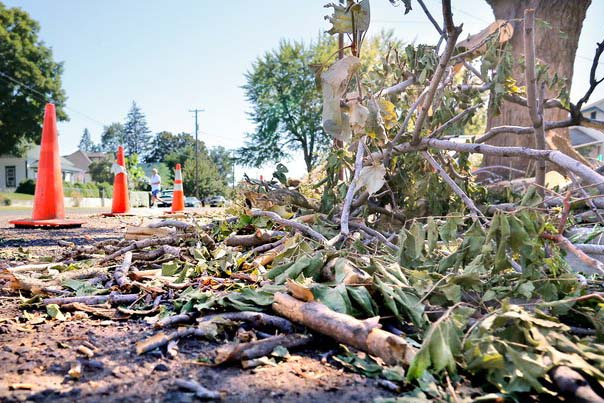

Greenville Residents Come Together
Residents of Greenville hit the streets to perform a community clean-up effort after heavy rains and winds blew through the town. Though streets were littered with debris and many structures were damaged, no one was injured in the storm. City workers are working overtime to help residents in their clean-up effort. Work is expected to take one week. Residents were without power for about 2 hours during the storm, but it took place during the daytime and temperatures were cool, so many residents weren't bothered by the outage. Elderly and medically-fragile residents were among those most affected.